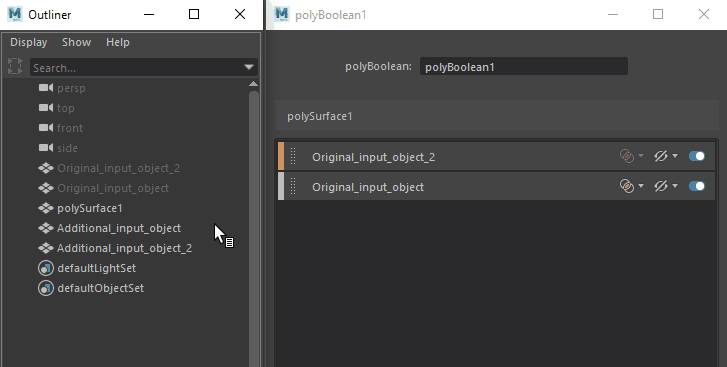

将输入对象添加到现有布尔节点
- 选择上一个布尔运算中的布尔结果对象。
- 选择要添加的其他输入对象。
- 执行下列操作之一：
- 选择“网格 > 布尔”(Mesh > Booleans)，然后选择布尔运算。有关每个运算的详细信息，请参见“网格”(Mesh)菜单。
- 单击“多边形建模”(Poly Modeling)工具架上的 。
- 在“建模工具包”(Modeling Toolkit)中单击 。
默认情况下，单击“多边形建模”(Poly Modeling)工具架或“建模工具包”(Modeling Toolkit)中的按钮将执行“差集(A-B)”(Difference (A-B))运算。也可以在这些按钮上单击鼠标右键，然后选择要执行的其他布尔运算。
其他输入对象将添加到现有布尔节点。
使用布尔堆栈将输入对象添加到现有布尔节点
- （可选）在布尔堆栈中，从“针对新输入的运算”(Operation for new inputs)下拉菜单中选择一种运算。
您的选择将应用于所有新输入。默认情况下，将自动为新输入对象指定“并集”(Union)布尔运算。
- 单击
 固定布尔堆栈，或单击“复制选项卡”(Copy Tab)在单独的窗口中打开布尔节点。
固定布尔堆栈，或单击“复制选项卡”(Copy Tab)在单独的窗口中打开布尔节点。
- 选择要添加的其他输入对象。
- 在布尔堆栈中单击“添加选定对象”(Add Selected Objects)。
使用“大纲视图”(Outliner)将输入对象添加到现有布尔节点
- （可选）在布尔堆栈中，从“针对新输入的运算”(Operation for new inputs)下拉菜单中选择一种运算。
您的选择将应用于所有新输入。默认情况下，将自动为新输入对象指定“并集”(Union)布尔运算。
- 单击 固定布尔堆栈，或单击“复制选项卡”(Copy Tab)在单独的窗口中打开布尔节点。
- 使用鼠标中键将对象从“大纲视图”(Outliner)拖动到布尔堆栈中的空白区域。
